Performance · moving image · digital collage
Henshin Gallery
Henshin explores transformation through the moving body. Black-and-white gestures are cut, stretched, and reassembled into unstable figures, allowing a single movement to become many possible forms. The work moves between performance, digital collage, and image-based typography, asking how identity can remain fluid while the body becomes an archive of change.
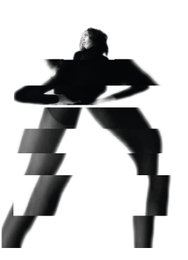
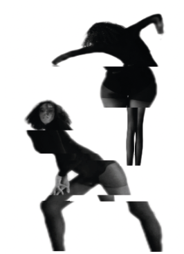
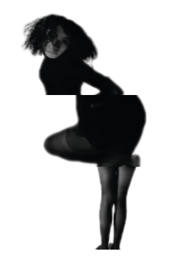
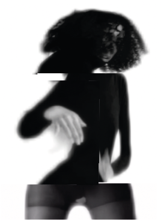
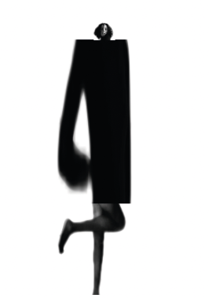
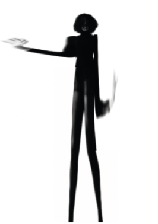
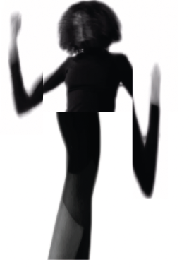
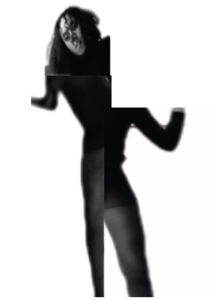
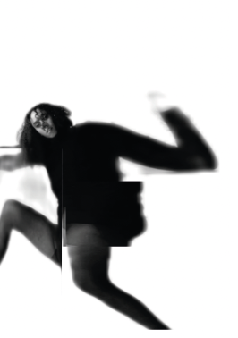
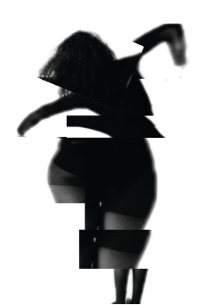
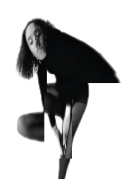
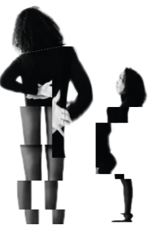